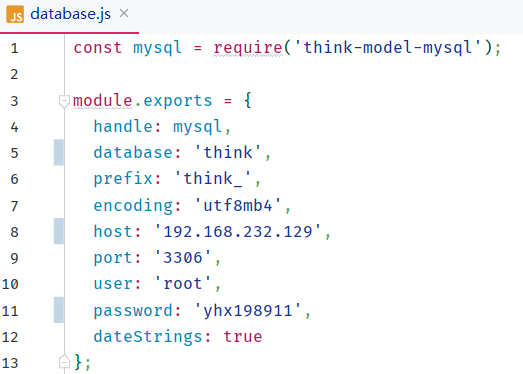

Think.js数据库配置
在Thinkjs项目中进行配置src/config/database.js文件
module.exports = {
handle: mysql,
database: 'think', // database_name
prefix: 'think_', // database_table 前缀
encoding: 'utf8mb4',
host: '192.168.232.129', // MySQLip地址
port: '3306', // MySQL端口号
user: 'root', // MySQL用户名
password: 'yhx198911', // MySQL用户密码
dateStrings: true
};
示例：
